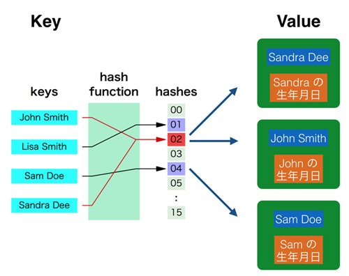

プログラミング言語Pythonについて
辞書型は、別名で連想配列やマップとも呼ばれている型です。 簡単にいってしまえば、重複が許されないキー(Key)とその値(Value)が対応付けられたデータ型です。 「キー」という名前からわかるように、これも内部的にハッシュを使っています。
例をあげて説明しましょう。果物(Key)と色(Value)の辞書オブジェクトを作るとすると、
というペアが作れます。辞書型を使うと「りんご」と指定すれば「赤色」が得られ、 「ぶどう」と指定すれば「紫」が帰ってきます。 先ほどのセットと同じように「りんご」というキーは重複が許されずにひとつしか存在することができないため、 「りんご : 緑色」というペアを改めて登録すると昔のデータは上書きされてなくなってしまいます。 ただ、例にある「りんご」と「さくらんぼ」を見ればわかるように値(Value)の重複は許されています。
勘のいいかたであれば辞書型のしくみの想像がついたかもしれませんが、 簡単にいってしまうと、セットにおけるハッシュの使い方に「Valueも追加」しているだけです。

「John Smith」をキーとして指定するとハッシュ関数で「02」が得られ、 「02」のなかから「John Smith」のValueを取得してきます。
それではさっそく辞書型を利用するサンプルプログラムを書いてみます。 まずは辞書オブジェクトの生成です。
a = dict() print(type(a)) # <class 'dict'> b = {} print(type(b)) # <class 'dict'> c = {"apple":"red", "lemon":"yellow"} print(type(c)) # <class 'dict'>
辞書オブジェクトの生成にはdict()関数を使う方法と、リストにおける [] に近い {} 記号を使うという方法があります。 {} を使う場合はその内部で 「key:value」 という組み合わせをコンマ区切りで列挙すると、 そのペアが追加された辞書オブジェクトが得られます。
次に辞書オブジェクトを操作してみます。
a = {"apple":"red", "lemon":"yellow"} # バリューの取得 print(a['apple']) # red # キーを指定したバリューの更新 a['apple'] = 'green' print(a['apple']) # green # 新しいキーとバリューの組み合わせの追加 a['orange'] = 'orange' print(a['orange']) # orange # 存在しないキーへのアクセス print(a['banana']) # Traceback (most recent call last): # ... # KeyError: 'banana'
キーを使った値の取得、キーと値のペアの登録を行っています。 リストにおけるインデックス番号がキー名に変わっているだけです。 "辞書オブジェクト[キー]" としてキーを指定することで、対応する値(Value)を参照します。 存在しないキーを参照しようとすると当然エラーとなります。
ただ、存在しないキーを参照した場合に「デフォルト値」を返したいという場合がたまにあります。 そのような場合、get メソッドや setdefault メソッドを利用します。 get メソッドの第一引数にキーを指定し、第二引数にキーが存在しなかった際に取得されるデフォルト値を指定します。 第二引数がない場合はデフォルト値として None が使われます。
a = {'apple':'red', 'lemon':'yellow'} print(a.get('apple', 'green' )) # red print(a.get('banana', 'green')) # green print(a) {'lemon': 'yellow', 'apple': 'red'}
辞書オブジェクトにはキー apple が存在するため、 ’apple’ を get した際はそのバリューである red が返されています。 ただ、存在しないキー ‘banana’ を指定した場合はデフォルト値である ‘green’ が返されています。 辞書オブジェクト自身は変更されていません。
setdefault は get とほとんど同じですが、 その名前からわかるように辞書オブジェクトがアップデートされます。
a = {'apple':'red', 'lemon':'yellow'} print(a.setdefault('apple', 'green')) # red print(a.setdefault('banana', 'green')) # green print(a) # {'lemon': 'yellow', 'apple': 'red', 'banana': 'green'}
セットと同じように辞書型もリストと似た操作ができます。 例えばキーの存在確認に in を使うことができます。
a = {"apple":"red", "lemon":"yellow"} print('apple' in a) # True print('banana' in a) # False
ほかにも、リストに似た特性はあり、pop や for 文での利用も可能です。
a = {'lemon': 'yellow', 'apple': 'red', 'banana': 'green'} print(a.pop('apple')) # red print(a) # {'banana': 'green', 'lemon': 'yellow'} print(a.popitem()) # ('banana', 'green') print(a) # {'lemon': 'yellow'} a = {'lemon': 'yellow', 'apple': 'red', 'banana': 'green'} for key in a: print(key) # lemon apple banana
キー一覧の取得などもよく使います。値一覧の取得はそれほど使わないかもしれないです。
a = {'lemon': 'yellow', 'apple': 'red', 'banana': 'green'} print(a.keys()) # dict_keys(['apple', 'lemon', 'banana']) print(a.values()) # dict_values(['red', 'yellow', 'green'])
ほかにも辞書型の使い方にはいろいろありますが、まずはこのあたりさえ使いこなせれば十分でしょう。